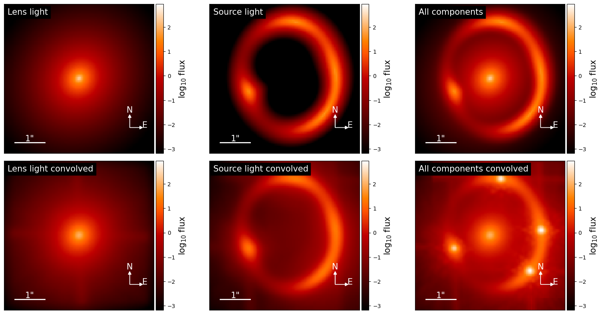
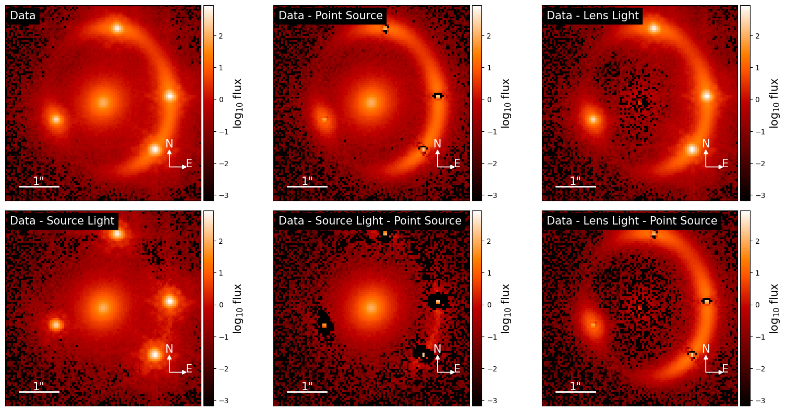
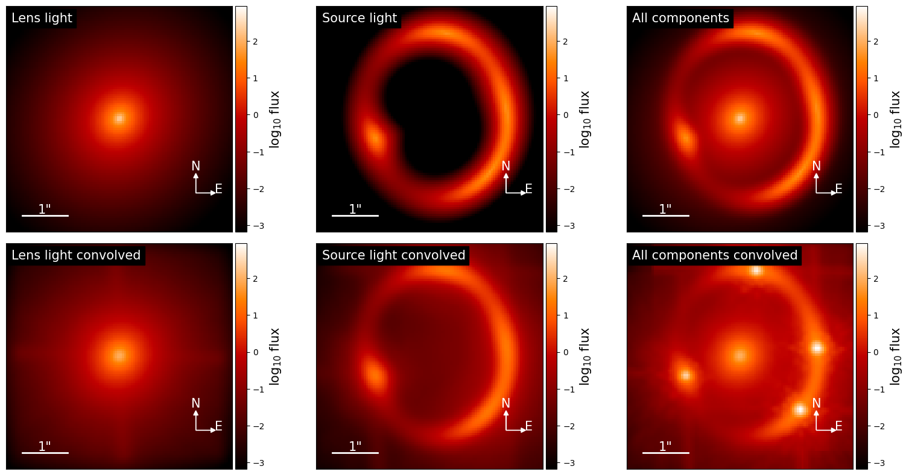
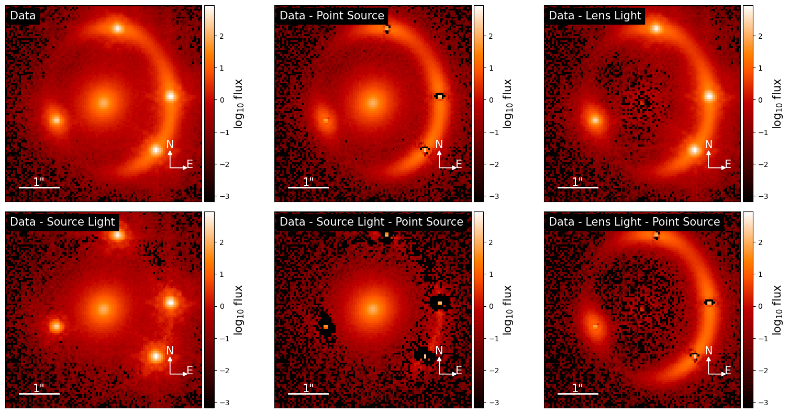

Time delay-cosmography with uncertain PSF#
This notebook requires standard python libraries and the publicly available packages on github:
lenstronomy (lenstronomy/lenstronomy)
STARRED (cosmograil/starred), based on the method described in https://ui.adsabs.harvard.edu/abs/2024arXiv240208725M/abstract
This notebook is an extension of this notebook, using STARRED instead of the lenstronomy build-in PSF iteration procedure. STARRED offers two main advantages:
it leverages the sub-pixel PSF information contained in the 4 quasar images, that are projected with different sub-pixel shift on the pixel grid. In other word, STARRED is reconstructing a drizzled version of the PSF, which allows us to reconstruct features of the PSF that are not sampled at the original pixel scale. For this reason, we highly recommend to use
point_source_supersampling_factor = 3. Choosing a evenpoint_source_supersampling_factorwill result in some inconsistency between the STARRED and lenstronomy PSF centering convention.STARRED uses a sparse regularisation procedure, that has also the effect of denoising the reconstructed PSF. You can choose the “intensity” of the denoising by changing ‘lambda_scales’ and ‘lambda_hf’. ‘lambda_scales = lambda_hf = 3’ means that only the feature that are 3\(\sigma\) above the noise level will be reconstructed in the PSF. We recommend to use ‘2 < lambda_scales = lambda_hf < 3’ for optimal reconstruction.
Note that STARRED runs perfectly fine on CPU but it is much faster on GPU. You’ll need a GPU compatible JAX installation for that. See the STARRED documentation for more detail.
The key parameters to adjust the behavior of STARRED are passed through ‘kwargs_psf_iter`. Here is a minimal example:
kwargs_psf_iter = {
'keep_psf_error_map': True,
'num_iter': 1, #we will just run STARRED once, you might want to run it more than once (3 is a good number for a first reconstruction)
'psf_iter_factor': 1, # we will fully update the PSF (recommended)
'kwargs_starred': {'verbose':True, 'lambda_scales':3, 'lambda_hf':3}, #Choose regularisation parameters here
'use_starred': True,
}
Other options can be passed to control the behavior of the optimiser. Keyword arguments contained in kwargs_starred are passed to this STARRED function.
Finally, If you make use of the STARRED PSF fitting algorithm, we recommend acknowledging the papers listed here.
For further information, please get in touch with the author of this notebook, Simon Birrer: sibirrer@gmail.com and Martin Millon: martin.millon@hotmail.fr for the STARRED part
# import of standard python libraries
import numpy as np
import os
import time
import corner
import astropy.io.fits as pyfits
import matplotlib.pyplot as plt
from mpl_toolkits.axes_grid1 import make_axes_locatable
%matplotlib inline
# make sure lenstronomy is installed, otherwise install the latest pip version
try:
import lenstronomy
except:
!pip install lenstronomy
try:
import starred
except:
!pip install starred-astro
# lenstronomy imports
from lenstronomy.LensModel.lens_model import LensModel
from lenstronomy.LensModel.Solver.lens_equation_solver import LensEquationSolver
from lenstronomy.LightModel.light_model import LightModel
from lenstronomy.PointSource.point_source import PointSource
from lenstronomy.ImSim.image_model import ImageModel
import lenstronomy.Util.param_util as param_util
import lenstronomy.Util.simulation_util as sim_util
import lenstronomy.Util.image_util as image_util
from lenstronomy.Util import kernel_util
from lenstronomy.Data.imaging_data import ImageData
from lenstronomy.Data.psf import PSF
import dill as pkl
simulation choices#
# define lens configuration and cosmology (not for lens modelling)
z_lens = 0.5
z_source = 1.5
point_source_supersampling_factor = 3
from astropy.cosmology import FlatLambdaCDM
cosmo = FlatLambdaCDM(H0=70, Om0=0.3, Ob0=0.)
# import PSF file
path = os.getcwd()
dirpath, _ = os.path.split(path)
module_path, _ = os.path.split(dirpath)
psf_filename = os.path.join(module_path, 'Data/PSF_TinyTim/psf_example.fits')
kernel = pyfits.getdata(psf_filename)
# blurr the PSF, this will be our starting point estimate
import scipy.ndimage as ndimage
kernel_blurred = ndimage.filters.gaussian_filter(kernel, 0.5, mode='nearest', truncate=5)
# data specifics
sigma_bkg = .05 # background noise per pixel (Gaussian)
exp_time = 100. # exposure time (arbitrary units, flux per pixel is in units #photons/exp_time unit)
numPix = 100 # cutout pixel size
deltaPix = 0.05# pixel size in arcsec (area per pixel = deltaPix**2)
psf_type = 'PIXEL' # 'gaussian', 'pixel', 'NONE'
kernel_size = 91
# initial input simulation
# generate the coordinate grid and image properties
kwargs_data = sim_util.data_configure_simple(numPix, deltaPix, exp_time, sigma_bkg)
data_class = ImageData(**kwargs_data)
# generate the psf variables
kernel_cut = kernel_util.cut_psf(kernel, kernel_size)
# we will provide a subsampled version of the PSF kernel to the PSF class, this is required as STARRED works much better with a subsampled PSF.
# This has to be set at the initialisation of the PSF class, the psf_iteration routines can not update that during the fit at the momment.
if point_source_supersampling_factor > 1:
kernel_cut = kernel_util.subgrid_kernel(kernel_cut, subgrid_res=point_source_supersampling_factor, odd=True, num_iter=100)
kwargs_psf_true = {'psf_type': psf_type, 'pixel_size': deltaPix, 'kernel_point_source': kernel_cut,
'point_source_supersampling_factor': point_source_supersampling_factor}
kernel_cut_blurred = kernel_util.cut_psf(kernel_blurred, kernel_size)
if point_source_supersampling_factor > 1:
kernel_cut_blurred = kernel_util.subgrid_kernel(kernel_cut_blurred, subgrid_res=point_source_supersampling_factor, odd=True, num_iter=100)
kwargs_psf = {'psf_type': psf_type, 'pixel_size': deltaPix, 'kernel_point_source': kernel_cut_blurred,
'point_source_supersampling_factor': point_source_supersampling_factor}
psf_class_true = PSF(**kwargs_psf_true)
psf_class = PSF(**kwargs_psf)
plt.matshow(np.log10(kernel_cut))
plt.show()
plt.matshow(np.log10(kernel_cut_blurred))
plt.show()
plt.matshow(kernel_cut - kernel_cut_blurred, vmin=-0.001, vmax=0.001)
plt.show()
/var/folders/k5/9nxb2fnj4zsbb1nrtpvbf8000000gn/T/ipykernel_59288/2869137786.py:18: DeprecationWarning: Please use `gaussian_filter` from the `scipy.ndimage` namespace, the `scipy.ndimage.filters` namespace is deprecated.
kernel_blurred = ndimage.filters.gaussian_filter(kernel, 0.5, mode='nearest', truncate=5)
# lensing quantities
gamma1, gamma2 = param_util.shear_polar2cartesian(phi=-np.pi/2, gamma=0.05)
kwargs_shear = {'gamma1': gamma1, 'gamma2': gamma2} # shear values
kwargs_pemd = {'theta_E': 1.66, 'gamma': 1.95, 'center_x': 0.0, 'center_y': 0, 'e1': 0.1, 'e2': 0.1} # parameters of the deflector lens model
# the lens model is a supperposition of an elliptical lens model with external shear
lens_model_list = ['EPL', 'SHEAR']
kwargs_lens = [kwargs_pemd, kwargs_shear]
lens_model_class = LensModel(lens_model_list=lens_model_list, z_lens=z_lens, z_source=z_source, cosmo=cosmo)
# choice of source type
source_type = 'SERSIC' # 'SERSIC' or 'SHAPELETS'
source_x = 0.2
source_y = 0.1
# Sersic parameters in the initial simulation
phi_G, q = 0.5, 0.8
e1, e2 = param_util.phi_q2_ellipticity(phi_G, q)
kwargs_sersic_source = {'amp': 4000, 'R_sersic': 0.1, 'n_sersic': 1, 'e1': e1, 'e2': e2, 'center_x': source_x, 'center_y': source_y}
#kwargs_else = {'sourcePos_x': source_x, 'sourcePos_y': source_y, 'quasar_amp': 400., 'gamma1_foreground': 0.0, 'gamma2_foreground':-0.0}
source_model_list = ['SERSIC_ELLIPSE']
kwargs_source = [kwargs_sersic_source]
source_model_class = LightModel(light_model_list=source_model_list)
# lens light model
phi_G, q = 0.9, 0.9
e1, e2 = param_util.phi_q2_ellipticity(phi_G, q)
kwargs_sersic_lens = {'amp': 8000, 'R_sersic': 0.2, 'n_sersic': 2., 'e1': e1, 'e2': e2, 'center_x': 0.0, 'center_y': 0}
lens_light_model_list = ['SERSIC_ELLIPSE']
kwargs_lens_light = [kwargs_sersic_lens]
lens_light_model_class = LightModel(light_model_list=lens_light_model_list)
lensEquationSolver = LensEquationSolver(lens_model_class)
x_image, y_image = lensEquationSolver.findBrightImage(source_x, source_y, kwargs_lens, numImages=4,
min_distance=deltaPix, search_window=numPix * deltaPix)
mag = lens_model_class.magnification(x_image, y_image, kwargs=kwargs_lens)
kwargs_ps = [{'ra_image': x_image, 'dec_image': y_image,
'point_amp': np.abs(mag)*1000}] # quasar point source position in the source plane and intrinsic brightness
point_source_list = ['LENSED_POSITION']
point_source_class = PointSource(point_source_type_list=point_source_list, fixed_magnification_list=[False])
kwargs_numerics = {'supersampling_factor': 1, 'supersampling_convolution': False,
'point_source_supersampling_factor': point_source_supersampling_factor}
imageModel = ImageModel(data_class, psf_class_true, lens_model_class, source_model_class,
lens_light_model_class,
point_source_class, kwargs_numerics=kwargs_numerics)
# generate image
image_sim = imageModel.image(kwargs_lens, kwargs_source, kwargs_lens_light, kwargs_ps)
poisson = image_util.add_poisson(image_sim, exp_time=exp_time)
bkg = image_util.add_background(image_sim, sigma_bkd=sigma_bkg)
image_sim = image_sim + bkg + poisson
data_class.update_data(image_sim)
kwargs_data['image_data'] = image_sim
kwargs_model = {'lens_model_list': lens_model_list,
'lens_light_model_list': lens_light_model_list,
'source_light_model_list': source_model_list,
'point_source_model_list': point_source_list
}
# display the initial simulated image
cmap_string = 'gray'
cmap = plt.get_cmap(cmap_string)
cmap.set_bad(color='k', alpha=1.)
cmap.set_under('k')
v_min = -4
v_max = 2
f, axes = plt.subplots(1, 1, figsize=(6, 6), sharex=False, sharey=False)
ax = axes
im = ax.matshow(np.log10(image_sim), origin='lower', vmin=v_min, vmax=v_max, cmap=cmap, extent=[0, 1, 0, 1])
ax.get_xaxis().set_visible(False)
ax.get_yaxis().set_visible(False)
ax.autoscale(False)
plt.show()
/var/folders/k5/9nxb2fnj4zsbb1nrtpvbf8000000gn/T/ipykernel_59288/3022968953.py:78: RuntimeWarning: invalid value encountered in log10
im = ax.matshow(np.log10(image_sim), origin='lower', vmin=v_min, vmax=v_max, cmap=cmap, extent=[0, 1, 0, 1])
time delays#
time delays are defined in lenstronomy as the difference in light travel path relative to a straight line. Negative values correspond to earlier arrival times. The units are in days.
# time delays, the unit [days] is matched when the lensing angles are in arcsec
from lenstronomy.Analysis.td_cosmography import TDCosmography
td_cosmo = TDCosmography(z_lens, z_source, kwargs_model, cosmo_fiducial=cosmo)
# time delays, the unit [days] is matched when the lensing angles are in arcsec
t_days = td_cosmo.time_delays(kwargs_lens, kwargs_ps, kappa_ext=0)
print("the time delays for the images at position ", kwargs_ps[0]['ra_image'], kwargs_ps[0]['dec_image'], "are: ", t_days)
# relative delays (observable). The convention is relative to the first image
dt_days = t_days[1:] - t_days[0]
# and errors can be assigned to the measured relative delays (full covariance matrix not yet implemented)
dt_sigma = [3, 5, 2] # Gaussian errors
# and here a realisation of the measurement with the quoted error bars
dt_measured = np.random.normal(dt_days, dt_sigma)
print("the measured relative delays are: ", dt_measured)
the time delays for the images at position [ 0.35302851 1.32507501 1.69993942 -1.1973414 ] [ 1.8915277 -1.19417343 0.16522287 -0.43528866] are: [-147.69894773 -133.21139497 -128.32128449 -67.49330428]
the measured relative delays are: [12.04979704 20.66437946 78.15738225]
Model and parameter choices#
# lens model choicers
fixed_lens = []
kwargs_lens_init = []
kwargs_lens_sigma = []
kwargs_lower_lens = []
kwargs_upper_lens = []
fixed_lens.append({})
kwargs_lens_init.append({'theta_E': 1.5, 'gamma': 2, 'center_x': 0.0, 'center_y': 0, 'e1': 0, 'e2': 0.})
#kwargs_lens_init.append(kwargs_spemd)
kwargs_lens_sigma.append({'theta_E': .1, 'e1': 0.1, 'e2': 0.1, 'gamma': 0.1, 'center_x': 0.1, 'center_y': 0.1})
kwargs_lower_lens.append({'theta_E': 0.01,'q': .5, 'gamma': 1.5, 'phi_G': 0., 'center_x': -10, 'center_y': -10})
kwargs_upper_lens.append({'theta_E': 10,'q': .5, 'gamma': 2.5, 'phi_G': 0., 'center_x': 10, 'center_y': 10})
fixed_lens.append({'ra_0': 0, 'dec_0': 0})
kwargs_lens_init.append({'gamma1': 0, 'gamma2': 0})
#kwargs_lens_init.append(kwargs_shear)
kwargs_lens_sigma.append({'gamma1': 0.1, 'gamma2': 0.1})
kwargs_lower_lens.append({'gamma1': -0.5, 'gamma2': -0.5})
kwargs_upper_lens.append({'gamma1': 0.5, 'gamma2': 0.5})
lens_params = [kwargs_lens_init, kwargs_lens_sigma, fixed_lens, kwargs_lower_lens, kwargs_upper_lens]
# lens light model choices
fixed_lens_light = []
kwargs_lens_light_init = []
kwargs_lens_light_sigma = []
kwargs_lower_lens_light = []
kwargs_upper_lens_light = []
fixed_lens_light.append({})
kwargs_lens_light_init.append({'R_sersic': 0.5, 'n_sersic': 1, 'e1': 0, 'e2': 0., 'center_x': 0, 'center_y': 0})
#kwargs_lens_light_init.append(kwargs_sersic_lens)
kwargs_lens_light_sigma.append({'n_sersic': 0.5, 'R_sersic': 0.1, 'e1': 0.1, 'e2': 0.1, 'center_x': 0.1, 'center_y': 0.1})
kwargs_lower_lens_light.append({'e1': -0.5, 'e2': -0.5, 'R_sersic': 0.01, 'n_sersic': 0.5, 'center_x': -10, 'center_y': -10})
kwargs_upper_lens_light.append({'e1': 0.5, 'e2': 0.5, 'R_sersic': 10, 'n_sersic': 8, 'center_x': 10, 'center_y': 10})
lens_light_params = [kwargs_lens_light_init, kwargs_lens_light_sigma, fixed_lens_light, kwargs_lower_lens_light, kwargs_upper_lens_light]
fixed_source = []
kwargs_source_init = []
kwargs_source_sigma = []
kwargs_lower_source = []
kwargs_upper_source = []
fixed_source.append({})
kwargs_source_init.append({'R_sersic': 0.1, 'n_sersic': 1, 'e1': 0, 'e2': 0., 'center_x': 0, 'center_y': 0})
#kwargs_source_init.append(kwargs_sersic_source)
kwargs_source_sigma.append({'n_sersic': 0.5, 'R_sersic': 0.05, 'e1': 0.1, 'e2': 0.1, 'center_x': 0.1, 'center_y': 0.1})
kwargs_lower_source.append({'e1': -0.5, 'e2': -0.5, 'R_sersic': 0.001, 'n_sersic': .5, 'center_x': -10, 'center_y': -10})
kwargs_upper_source.append({'e1': 0.5, 'e2': 0.5, 'R_sersic': 10, 'n_sersic': 5., 'center_x': 10, 'center_y': 10})
source_params = [kwargs_source_init, kwargs_source_sigma, fixed_source, kwargs_lower_source, kwargs_upper_source]
fixed_ps = [{}]
kwargs_ps_init = kwargs_ps
kwargs_ps_sigma = [{'ra_image': 0.01 * np.ones(len(x_image)), 'dec_image': 0.01 * np.ones(len(x_image))}]
kwargs_lower_ps = [{'ra_image': -10 * np.ones(len(x_image)), 'dec_image': -10 * np.ones(len(y_image))}]
kwargs_upper_ps = [{'ra_image': 10* np.ones(len(x_image)), 'dec_image': 10 * np.ones(len(y_image))}]
fixed_cosmo = {}
kwargs_cosmo_init = {'D_dt': 5000}
kwargs_cosmo_sigma = {'D_dt': 10000}
kwargs_lower_cosmo = {'D_dt': 0}
kwargs_upper_cosmo = {'D_dt': 10000}
cosmo_params = [kwargs_cosmo_init, kwargs_cosmo_sigma, fixed_cosmo, kwargs_lower_cosmo, kwargs_upper_cosmo]
ps_params = [kwargs_ps_init, kwargs_ps_sigma, fixed_ps, kwargs_lower_ps, kwargs_upper_ps]
kwargs_params = {'lens_model': lens_params,
'source_model': source_params,
'lens_light_model': lens_light_params,
'point_source_model': ps_params,
'special': cosmo_params}
redo_fit = False
# now we first run a PSO with the wrong PSF
psf_iter_factor = 0.2
psf_iter_num = 100
sigma_scale = 0.1
# numerical options and fitting sequences
num_source_model = len(source_model_list)
kwargs_constraints = {'joint_source_with_point_source': [[0, 0]],
'num_point_source_list': [4],
'solver_type': 'PROFILE_SHEAR', # 'PROFILE', 'PROFILE_SHEAR', 'ELLIPSE', 'CENTER'
'Ddt_sampling': True,
}
kwargs_likelihood = {'check_bounds': True,
'force_no_add_image': False,
'source_marg': False,
'image_position_uncertainty': 0.004,
'check_matched_source_position': True,
'source_position_tolerance': 0.001,
'time_delay_likelihood': True,
}
image_band = [kwargs_data, kwargs_psf, kwargs_numerics]
multi_band_list = [image_band]
kwargs_data_joint = {'multi_band_list': multi_band_list, 'multi_band_type': 'multi-linear',
'time_delays_measured': dt_measured,
'time_delays_uncertainties': dt_sigma,}
kwargs_init = [kwargs_lens, kwargs_source, kwargs_lens_light, kwargs_ps]
from lenstronomy.Workflow.fitting_sequence import FittingSequence
mpi = False # MPI possible, but not supported through that notebook.
fitting_kwargs_list = [['update_settings', {'lens_add_fixed': [[0, ['gamma']]]}],
['PSO', {'sigma_scale': sigma_scale, 'n_particles': 100, 'n_iterations': 100}],]
if not os.path.exists('./fitsequence.pkl') or redo_fit:
from lenstronomy.Workflow.fitting_sequence import FittingSequence
fitting_seq = FittingSequence(kwargs_data_joint, kwargs_model, kwargs_constraints, kwargs_likelihood, kwargs_params)
start_time = time.time()
chain_list = fitting_seq.fit_sequence(fitting_kwargs_list)
kwargs_result = fitting_seq.best_fit()
end_time = time.time()
print(end_time - start_time, 'total time needed for computation')
print('============ CONGRATULATION, YOUR JOB WAS SUCCESSFUL ================ ')
pkl.dump(fitting_seq, open('fitsequence.pkl', 'wb'))
pkl.dump(chain_list, open('chainlist.pkl', 'wb'))
else:
print('Loading from pickle file.')
fitting_seq = pkl.load(open('fitsequence.pkl', 'rb'))
chain_list = pkl.load(open('chainlist.pkl', 'rb'))
kwargs_result = fitting_seq.best_fit()
# here is the output
from lenstronomy.Plots import chain_plot
from lenstronomy.Plots.model_plot import ModelPlot
modelPlot = ModelPlot(multi_band_list, kwargs_model, kwargs_result, arrow_size=0.02, cmap_string="gist_heat")
f, axes = modelPlot.plot_main(); f.show()
f, axes = modelPlot.plot_separate(); f.show()
f, axes = modelPlot.plot_subtract_from_data_all(); f.show()
Loading from pickle file.
-4.406749897064729 reduced X^2 of all evaluated imaging data combined (without degrees of freedom subtracted).
reduced chi^2 of data 0 = 4.4067498970647305
/Users/martin/Desktop/TDLMC/lenstronomy/lenstronomy/Plots/model_band_plot.py:160: RuntimeWarning: invalid value encountered in log10
np.log10(self._data),
/Users/martin/Desktop/TDLMC/lenstronomy/lenstronomy/Plots/model_band_plot.py:1206: UserWarning: Tight layout not applied. tight_layout cannot make axes width small enough to accommodate all axes decorations
f.tight_layout()
/var/folders/k5/9nxb2fnj4zsbb1nrtpvbf8000000gn/T/ipykernel_59288/1423373189.py:63: UserWarning: Matplotlib is currently using module://matplotlib_inline.backend_inline, which is a non-GUI backend, so cannot show the figure.
f, axes = modelPlot.plot_main(); f.show()
/var/folders/k5/9nxb2fnj4zsbb1nrtpvbf8000000gn/T/ipykernel_59288/1423373189.py:64: UserWarning: Matplotlib is currently using module://matplotlib_inline.backend_inline, which is a non-GUI backend, so cannot show the figure.
f, axes = modelPlot.plot_separate(); f.show()
/Users/martin/Desktop/TDLMC/lenstronomy/lenstronomy/Plots/model_band_plot.py:1157: RuntimeWarning: invalid value encountered in log10
np.log10(self._data - model),
/var/folders/k5/9nxb2fnj4zsbb1nrtpvbf8000000gn/T/ipykernel_59288/1423373189.py:65: UserWarning: Matplotlib is currently using module://matplotlib_inline.backend_inline, which is a non-GUI backend, so cannot show the figure.
f, axes = modelPlot.plot_subtract_from_data_all(); f.show()
 



#now we run an iterative PSF reconstruction with the best fit model of the previous run
method_PSF_iteration = 'STARRED' #use 'STARRED' to use the STARRED method for PSF reconstruction or 'stack' to use the standard lenstronomy stacking method
kwargs_lbfgs = {'maxiter':1000}
kwargs_optax1 = {'max_iterations': 500, 'min_iterations': None,
'init_learning_rate': 1e-2, 'schedule_learning_rate': True,
'progress_bar': True}
if method_PSF_iteration == 'STARRED':
kwargs_psf_iter = {
'keep_psf_error_map': True,
'psf_symmetry': 1,
'block_center_neighbour': 0.05,
'num_iter': 3, #we run STARRED more than once, to see if the chi2 keeps improving after redoing the linear inversion with the new PSF.
'psf_iter_factor': 1, #We fully update the PSF at each iteration, if the fit improves
'kwargs_starred': {'verbose':True, 'lambda_scales':3, 'lambda_hf':3, #Choose regularisation parameters, lambda_scales and lambda_hf should be 2 or 3 if the noise is correctly scaled
'optim_list':['adabelief', 'adabelief'], 'kwargs_optim_list':[kwargs_optax1, kwargs_optax1],#Choose the optimisers to use, and pass the kwargs accordingly. One for the Moffat fit, one for the full PSF fit.
},
'use_starred': True,
}
else:
kwargs_psf_iter = {'stacking_method': 'median',
'keep_psf_error_map': True,
'psf_symmetry': 2,
'block_center_neighbour': 0.05,
'num_iter': psf_iter_num,
'psf_iter_factor': psf_iter_factor}
fitting_kwargs_list = [['psf_iteration', kwargs_psf_iter]]
chain_list = fitting_seq.fit_sequence(fitting_kwargs_list)
#lens_result, source_result, lens_light_result, ps_result, cosmo_result
multi_band_list = fitting_seq.multi_band_list
kwargs_psf_updated = multi_band_list[0][1]
f, axes = chain_plot.psf_iteration_compare(kwargs_psf_updated)
f.show()
modelPlot = ModelPlot(multi_band_list, kwargs_model, kwargs_result, arrow_size=0.02, cmap_string="gist_heat")
f, axes = modelPlot.plot_main()
f.show()
f, axes = modelPlot.plot_separate()
f.show()
f, axes = modelPlot.plot_subtract_from_data_all()
f.show()
The autoreload extension is already loaded. To reload it, use:
%reload_ext autoreload
/Users/martin/Desktop/TDLMC/lenstronomy/lenstronomy/Workflow/psf_fitting.py:399: UserWarning: Negative or zero values in the noise maps. Replacing these pixels with the median value.
warnings.warn(
### Step 1, fixing : ['background'] ###
optax.adabelief: 100%|██████████| 500/500 [00:13<00:00, 37.56it/s]
/Users/martin/Desktop/modules/starred/starred/utils/noise_utils.py:52: RuntimeWarning: Mean of empty slice
noise_map = np.nanmean(centered_masked_noise_maps, axis=0)
Step 1/2 took 13 seconds
Kwargs partial at step 1/2 {'kwargs_moffat': {'fwhm_x': Array([1.7868354], dtype=float32), 'fwhm_y': Array([1.6850523], dtype=float32), 'phi': Array([-0.42739138], dtype=float32), 'beta': Array([2.0912285], dtype=float32), 'C': Array([1.0613872], dtype=float32)}, 'kwargs_gaussian': {'a': Array([1.3004495 , 1.9628215 , 2.0233462 , 0.56087583], dtype=float32), 'x0': Array([-0.44622955, -0.00329583, 0.49304396, -0.4462836 ], dtype=float32), 'y0': Array([ 0.3494961 , -0.35200995, -0.17879504, -0.18685012], dtype=float32)}, 'kwargs_background': {'background': Array([0., 0., 0., ..., 0., 0., 0.], dtype=float32)}}
LogL : 66866.61
Overall Reduced Chi2 : 4.037351
### Step 2, fixing : ['moffat'] ###
optax.adabelief: 100%|██████████| 500/500 [01:13<00:00, 6.76it/s]
Step 2/2 took 74 seconds
Kwargs partial at step 2/2 {'kwargs_moffat': {'fwhm_x': Array([1.7868354], dtype=float32), 'fwhm_y': Array([1.6850523], dtype=float32), 'phi': Array([-0.42739138], dtype=float32), 'beta': Array([2.0912285], dtype=float32), 'C': Array([1.0613872], dtype=float32)}, 'kwargs_gaussian': {'a': Array([1.1325598 , 1.7689406 , 1.825574 , 0.49072513], dtype=float32), 'x0': Array([-0.44381943, 0.00095742, 0.4960301 , -0.4452449 ], dtype=float32), 'y0': Array([ 0.32495078, -0.37070277, -0.1898343 , -0.1990189 ], dtype=float32)}, 'kwargs_background': {'background': Array([-5.1305740e-04, -3.8812694e-05, 1.5789986e-04, ...,
1.9963998e-04, -2.2888464e-05, -4.9704377e-04], dtype=float32)}}
LogL : 78607.72
Overall Reduced Chi2 : 2.19299
/Users/martin/Desktop/TDLMC/lenstronomy/lenstronomy/Data/psf.py:80: UserWarning: Input PSF model has at least one negative element, which is unphysical except for a PSF of an interferometric array.
warnings.warn(
### Step 1, fixing : ['background'] ###
optax.adabelief: 100%|██████████| 500/500 [00:10<00:00, 49.39it/s]
Step 1/2 took 10 seconds
Kwargs partial at step 1/2 {'kwargs_moffat': {'fwhm_x': Array([1.5797043], dtype=float32), 'fwhm_y': Array([1.490349], dtype=float32), 'phi': Array([-0.42033258], dtype=float32), 'beta': Array([1.8548305], dtype=float32), 'C': Array([1.3506466], dtype=float32)}, 'kwargs_gaussian': {'a': Array([1.5544794, 2.3363688, 2.4145315, 0.6689111], dtype=float32), 'x0': Array([-0.44340762, -0.00361497, 0.49254766, -0.44419336], dtype=float32), 'y0': Array([ 0.34064206, -0.35106 , -0.17737626, -0.18480314], dtype=float32)}, 'kwargs_background': {'background': Array([0., 0., 0., ..., 0., 0., 0.], dtype=float32)}}
LogL : 42632.71
Overall Reduced Chi2 : 2.5741282
### Step 2, fixing : ['moffat'] ###
optax.adabelief: 100%|██████████| 500/500 [01:34<00:00, 5.31it/s]
Step 2/2 took 94 seconds
Kwargs partial at step 2/2 {'kwargs_moffat': {'fwhm_x': Array([1.5797043], dtype=float32), 'fwhm_y': Array([1.490349], dtype=float32), 'phi': Array([-0.42033258], dtype=float32), 'beta': Array([1.8548305], dtype=float32), 'C': Array([1.3506466], dtype=float32)}, 'kwargs_gaussian': {'a': Array([1.3824414, 2.1484225, 2.2224107, 0.5876336], dtype=float32), 'x0': Array([-0.44699422, -0.0035992 , 0.4917667 , -0.44807804], dtype=float32), 'y0': Array([ 0.32291096, -0.3743701 , -0.19429986, -0.20239495], dtype=float32)}, 'kwargs_background': {'background': Array([ 1.9920016e-04, 2.7192378e-04, -6.0641692e-06, ...,
-2.9970738e-04, 2.3296473e-04, -9.0660818e-05], dtype=float32)}}
LogL : 55892.582
Overall Reduced Chi2 : 1.0180006
### Step 1, fixing : ['background'] ###
optax.adabelief: 100%|██████████| 500/500 [00:09<00:00, 55.30it/s]
Step 1/2 took 9 seconds
Kwargs partial at step 1/2 {'kwargs_moffat': {'fwhm_x': Array([1.6380465], dtype=float32), 'fwhm_y': Array([1.5468638], dtype=float32), 'phi': Array([-0.4370787], dtype=float32), 'beta': Array([1.9256285], dtype=float32), 'C': Array([0.9592198], dtype=float32)}, 'kwargs_gaussian': {'a': Array([1.4794647 , 2.2256901 , 2.3049936 , 0.63642156], dtype=float32), 'x0': Array([-0.444511 , -0.00351158, 0.49298015, -0.44579253], dtype=float32), 'y0': Array([ 0.34343424, -0.35158262, -0.17694254, -0.18576822], dtype=float32)}, 'kwargs_background': {'background': Array([0., 0., 0., ..., 0., 0., 0.], dtype=float32)}}
LogL : 41677.48
Overall Reduced Chi2 : 2.516452
### Step 2, fixing : ['moffat'] ###
optax.adabelief: 100%|██████████| 500/500 [01:13<00:00, 6.83it/s]
Step 2/2 took 73 seconds
Kwargs partial at step 2/2 {'kwargs_moffat': {'fwhm_x': Array([1.6380465], dtype=float32), 'fwhm_y': Array([1.5468638], dtype=float32), 'phi': Array([-0.4370787], dtype=float32), 'beta': Array([1.9256285], dtype=float32), 'C': Array([0.9592198], dtype=float32)}, 'kwargs_gaussian': {'a': Array([1.2966391, 2.0308907, 2.1067843, 0.5325912], dtype=float32), 'x0': Array([-0.43147233, 0.01628953, 0.50849277, -0.43378973], dtype=float32), 'y0': Array([ 0.30950606, -0.38826844, -0.20690933, -0.21634257], dtype=float32)}, 'kwargs_background': {'background': Array([-8.0461090e-05, -1.3188618e-04, -6.4160980e-05, ...,
2.7849059e-05, 3.5220870e-05, -9.6407042e-05], dtype=float32)}}
LogL : 42125.445
Overall Reduced Chi2 : 0.9820584
iteration of step 2 gave best reconstruction.
log likelihood before: -22067.56446267387 and log likelihood after: -7037.487849042049
/Users/martin/Desktop/TDLMC/lenstronomy/lenstronomy/Plots/chain_plot.py:159: RuntimeWarning: invalid value encountered in log10
im = ax.matshow(np.log10(psf_out), origin="lower", **kwargs)
/Users/martin/Desktop/TDLMC/lenstronomy/lenstronomy/Plots/chain_plot.py:200: RuntimeWarning: divide by zero encountered in log10
np.log10(psf_error_map * psf.kernel_point_source**2),
/var/folders/k5/9nxb2fnj4zsbb1nrtpvbf8000000gn/T/ipykernel_59288/1714751780.py:41: UserWarning: Matplotlib is currently using module://matplotlib_inline.backend_inline, which is a non-GUI backend, so cannot show the figure.
f.show()
/Users/martin/Desktop/TDLMC/lenstronomy/lenstronomy/Plots/model_band_plot.py:67: RuntimeWarning: invalid value encountered in log10
log_model = np.log10(model)
-1.4074975698084098 reduced X^2 of all evaluated imaging data combined (without degrees of freedom subtracted).
reduced chi^2 of data 0 = 1.40749756980841
/Users/martin/Desktop/TDLMC/lenstronomy/lenstronomy/Plots/model_band_plot.py:160: RuntimeWarning: invalid value encountered in log10
np.log10(self._data),
/Users/martin/Desktop/TDLMC/lenstronomy/lenstronomy/Plots/model_band_plot.py:223: RuntimeWarning: invalid value encountered in log10
np.log10(self._model),
/Users/martin/Desktop/TDLMC/lenstronomy/lenstronomy/Plots/model_band_plot.py:1206: UserWarning: Tight layout not applied. tight_layout cannot make axes width small enough to accommodate all axes decorations
f.tight_layout()
/var/folders/k5/9nxb2fnj4zsbb1nrtpvbf8000000gn/T/ipykernel_59288/1714751780.py:44: UserWarning: Matplotlib is currently using module://matplotlib_inline.backend_inline, which is a non-GUI backend, so cannot show the figure.
f.show()
/Users/martin/Desktop/TDLMC/lenstronomy/lenstronomy/Plots/model_band_plot.py:1101: RuntimeWarning: invalid value encountered in log10
np.log10(model),
/var/folders/k5/9nxb2fnj4zsbb1nrtpvbf8000000gn/T/ipykernel_59288/1714751780.py:46: UserWarning: Matplotlib is currently using module://matplotlib_inline.backend_inline, which is a non-GUI backend, so cannot show the figure.
f.show()
/Users/martin/Desktop/TDLMC/lenstronomy/lenstronomy/Plots/model_band_plot.py:1157: RuntimeWarning: invalid value encountered in log10
np.log10(self._data - model),
/var/folders/k5/9nxb2fnj4zsbb1nrtpvbf8000000gn/T/ipykernel_59288/1714751780.py:48: UserWarning: Matplotlib is currently using module://matplotlib_inline.backend_inline, which is a non-GUI backend, so cannot show the figure.
f.show()
# and now we run another PSO optimization followed by another PSF iteration
fitting_kwargs_list = [['update_settings', {'lens_remove_fixed': [[0, ['gamma']]]}],
['PSO', {'sigma_scale': sigma_scale, 'n_particles': 100, 'n_iterations': 100}],
['psf_iteration', kwargs_psf_iter],
['PSO', {'sigma_scale': sigma_scale, 'n_particles': 100, 'n_iterations': 100}],
['psf_iteration', kwargs_psf_iter]]
chain_list = fitting_seq.fit_sequence(fitting_kwargs_list)
kwargs_result = fitting_seq.best_fit()
multi_band_list = fitting_seq.multi_band_list
kwargs_psf_updated = multi_band_list[0][1]
f, axes = chain_plot.psf_iteration_compare(kwargs_psf_updated)
f.show()
modelPlot = ModelPlot(multi_band_list, kwargs_model, kwargs_result, arrow_size=0.02, cmap_string="gist_heat")
f, axes = modelPlot.plot_main()
f.show()
f, axes = modelPlot.plot_separate()
f.show()
f, axes = modelPlot.plot_subtract_from_data_all()
f.show()
Computing the PSO ...
10
20
30
40
50
60
70
80
90
100
Max iteration reached! Stopping.
-1.302900807745714 reduced X^2 of best position
-6498.217778631749 log likelihood
9975 effective number of data points
[{'theta_E': 1.6538384177830043, 'gamma': 1.9989920319892713, 'e1': 0.08147196270523069, 'e2': 0.09078721446205495, 'center_x': 0.014030214229862096, 'center_y': 0.007189277530610161}, {'gamma1': -0.06349852998479961, 'gamma2': -0.007973173718957817, 'ra_0': 0, 'dec_0': 0}] lens result
[{'amp': 1, 'R_sersic': 0.10033272942802798, 'n_sersic': 0.931665616199429, 'e1': 0.07784433447414482, 'e2': 0.10620798687957775, 'center_x': 0.2137519623709072, 'center_y': 0.10566517381022243}] source result
[{'amp': 1, 'R_sersic': 0.19683005667026965, 'n_sersic': 1.9741115902203228, 'e1': -0.015041960046717071, 'e2': 0.05010619183411827, 'center_x': -0.00013273039574940854, 'center_y': 0.0008561591756572656}] lens light result
[{'ra_image': array([ 0.35272022, 1.32500064, 1.69955298, -1.19739434]), 'dec_image': array([ 1.89147221, -1.19360752, 0.16565958, -0.43489528]), 'point_amp': array([1., 1., 1., 1.])}] point source result
[] tracer source result
{'D_dt': 3358.6157268667707} special param result
8553.65977883339 time used for PSO
===================
### Step 1, fixing : ['background'] ###
optax.adabelief: 100%|██████████| 500/500 [00:09<00:00, 54.90it/s]
Step 1/2 took 9 seconds
Kwargs partial at step 1/2 {'kwargs_moffat': {'fwhm_x': Array([1.6255733], dtype=float32), 'fwhm_y': Array([1.5310127], dtype=float32), 'phi': Array([-0.43339786], dtype=float32), 'beta': Array([1.9151084], dtype=float32), 'C': Array([1.2860068], dtype=float32)}, 'kwargs_gaussian': {'a': Array([1.4980745, 2.246934 , 2.32743 , 0.6472287], dtype=float32), 'x0': Array([-0.44398367, -0.00382141, 0.4932783 , -0.44344154], dtype=float32), 'y0': Array([ 0.34299058, -0.35168886, -0.17635812, -0.18496779], dtype=float32)}, 'kwargs_background': {'background': Array([0., 0., 0., ..., 0., 0., 0.], dtype=float32)}}
LogL : 40621.605
Overall Reduced Chi2 : 2.4526992
### Step 2, fixing : ['moffat'] ###
optax.adabelief: 100%|██████████| 500/500 [00:53<00:00, 9.30it/s]
Step 2/2 took 54 seconds
Kwargs partial at step 2/2 {'kwargs_moffat': {'fwhm_x': Array([1.6255733], dtype=float32), 'fwhm_y': Array([1.5310127], dtype=float32), 'phi': Array([-0.43339786], dtype=float32), 'beta': Array([1.9151084], dtype=float32), 'C': Array([1.2860068], dtype=float32)}, 'kwargs_gaussian': {'a': Array([1.3269345 , 2.0585127 , 2.1337223 , 0.56798697], dtype=float32), 'x0': Array([-0.4371417 , 0.00811063, 0.50249326, -0.4378316 ], dtype=float32), 'y0': Array([ 0.31823945, -0.3790206 , -0.19719554, -0.20610106], dtype=float32)}, 'kwargs_background': {'background': Array([-5.6237582e-04, 2.0242296e-04, -3.7455081e-06, ...,
1.6502028e-04, 2.3095585e-04, -2.7373698e-04], dtype=float32)}}
LogL : 55283.14
Overall Reduced Chi2 : 0.9322072
### Step 1, fixing : ['background'] ###
optax.adabelief: 100%|██████████| 500/500 [00:07<00:00, 67.95it/s]
Step 1/2 took 7 seconds
Kwargs partial at step 1/2 {'kwargs_moffat': {'fwhm_x': Array([1.5960068], dtype=float32), 'fwhm_y': Array([1.5007799], dtype=float32), 'phi': Array([-0.41589892], dtype=float32), 'beta': Array([1.8701143], dtype=float32), 'C': Array([1.3617061], dtype=float32)}, 'kwargs_gaussian': {'a': Array([1.5321904 , 2.2913105 , 2.3744512 , 0.65487826], dtype=float32), 'x0': Array([-0.44323722, -0.00329696, 0.49306288, -0.4409249 ], dtype=float32), 'y0': Array([ 0.34114295, -0.35177544, -0.17704278, -0.18415299], dtype=float32)}, 'kwargs_background': {'background': Array([0., 0., 0., ..., 0., 0., 0.], dtype=float32)}}
LogL : 45818.02
Overall Reduced Chi2 : 2.7664545
### Step 2, fixing : ['moffat'] ###
optax.adabelief: 100%|██████████| 500/500 [00:54<00:00, 9.12it/s]
Step 2/2 took 55 seconds
Kwargs partial at step 2/2 {'kwargs_moffat': {'fwhm_x': Array([1.5960068], dtype=float32), 'fwhm_y': Array([1.5007799], dtype=float32), 'phi': Array([-0.41589892], dtype=float32), 'beta': Array([1.8701143], dtype=float32), 'C': Array([1.3617061], dtype=float32)}, 'kwargs_gaussian': {'a': Array([1.3595066, 2.1045835, 2.1820843, 0.5780874], dtype=float32), 'x0': Array([-0.4471906 , -0.00420627, 0.49174073, -0.44585323], dtype=float32), 'y0': Array([ 0.31274402, -0.38466066, -0.20399633, -0.21113752], dtype=float32)}, 'kwargs_background': {'background': Array([ 7.7842073e-05, -3.6658277e-04, 1.1996040e-04, ...,
6.9005822e-05, 2.5063995e-04, -4.0993825e-04], dtype=float32)}}
LogL : 55331.438
Overall Reduced Chi2 : 1.0066102
### Step 1, fixing : ['background'] ###
optax.adabelief: 100%|██████████| 500/500 [00:10<00:00, 45.94it/s]
Step 1/2 took 11 seconds
Kwargs partial at step 1/2 {'kwargs_moffat': {'fwhm_x': Array([1.6860088], dtype=float32), 'fwhm_y': Array([1.5879458], dtype=float32), 'phi': Array([-0.43251365], dtype=float32), 'beta': Array([1.9845386], dtype=float32), 'C': Array([0.86942625], dtype=float32)}, 'kwargs_gaussian': {'a': Array([1.4164605, 2.1378722, 2.2132604, 0.6124567], dtype=float32), 'x0': Array([-0.4444347 , -0.00302731, 0.49255487, -0.44423813], dtype=float32), 'y0': Array([ 0.3443914 , -0.35249338, -0.1775801 , -0.18587287], dtype=float32)}, 'kwargs_background': {'background': Array([0., 0., 0., ..., 0., 0., 0.], dtype=float32)}}
LogL : 42720.895
Overall Reduced Chi2 : 2.5794528
### Step 2, fixing : ['moffat'] ###
optax.adabelief: 100%|██████████| 500/500 [01:07<00:00, 7.45it/s]
Step 2/2 took 67 seconds
Kwargs partial at step 2/2 {'kwargs_moffat': {'fwhm_x': Array([1.6860088], dtype=float32), 'fwhm_y': Array([1.5879458], dtype=float32), 'phi': Array([-0.43251365], dtype=float32), 'beta': Array([1.9845386], dtype=float32), 'C': Array([0.86942625], dtype=float32)}, 'kwargs_gaussian': {'a': Array([1.2331349 , 1.9416593 , 2.015234 , 0.50278974], dtype=float32), 'x0': Array([-0.41565365, 0.03278879, 0.52321696, -0.41682062], dtype=float32), 'y0': Array([ 0.295929 , -0.401604 , -0.21981606, -0.2282494 ], dtype=float32)}, 'kwargs_background': {'background': Array([-1.2885175e-04, -2.3017373e-04, -1.0121472e-04, ...,
-5.8566206e-06, -3.3173557e-05, 1.8662482e-05], dtype=float32)}}
LogL : 38821.625
Overall Reduced Chi2 : 0.95654786
iteration of step 0 gave best reconstruction.
log likelihood before: -6497.679122210708 and log likelihood after: -6497.679122210708
Computing the PSO ...
10
20
30
40
50
60
70
80
90
100
Max iteration reached! Stopping.
-1.3027781503435383 reduced X^2 of best position
-6497.606024838397 log likelihood
9975 effective number of data points
[{'theta_E': 1.653844224538014, 'gamma': 1.998100043438817, 'e1': 0.08132772194909202, 'e2': 0.09067350271573311, 'center_x': 0.014048401599016908, 'center_y': 0.007230920870334532}, {'gamma1': -0.06342873113924918, 'gamma2': -0.007935508117822508, 'ra_0': 0, 'dec_0': 0}] lens result
[{'amp': 1, 'R_sersic': 0.10021922363798424, 'n_sersic': 0.9328616072410822, 'e1': 0.07724504184579092, 'e2': 0.10647257778047572, 'center_x': 0.21356061087774833, 'center_y': 0.10559136409005351}] source result
[{'amp': 1, 'R_sersic': 0.19680472630796603, 'n_sersic': 1.9681258049158252, 'e1': -0.01529907158857879, 'e2': 0.049720058102591023, 'center_x': -0.00013806745975031244, 'center_y': 0.0009444711542185073}] lens light result
[{'ra_image': array([ 0.35272321, 1.32500001, 1.69955411, -1.19739096]), 'dec_image': array([ 1.89149216, -1.19360789, 0.16565354, -0.43485301]), 'point_amp': array([1., 1., 1., 1.])}] point source result
[] tracer source result
{'D_dt': 3379.277216132627} special param result
398.25491404533386 time used for PSO
===================
### Step 1, fixing : ['background'] ###
optax.adabelief: 100%|██████████| 500/500 [00:08<00:00, 58.13it/s]
Step 1/2 took 9 seconds
Kwargs partial at step 1/2 {'kwargs_moffat': {'fwhm_x': Array([1.6248912], dtype=float32), 'fwhm_y': Array([1.530311], dtype=float32), 'phi': Array([-0.43275335], dtype=float32), 'beta': Array([1.914281], dtype=float32), 'C': Array([1.1808383], dtype=float32)}, 'kwargs_gaussian': {'a': Array([1.498984 , 2.2482443, 2.328839 , 0.6476343], dtype=float32), 'x0': Array([-0.44398686, -0.00381856, 0.4932869 , -0.44346696], dtype=float32), 'y0': Array([ 0.34293473, -0.3516901 , -0.1763579 , -0.18504411], dtype=float32)}, 'kwargs_background': {'background': Array([0., 0., 0., ..., 0., 0., 0.], dtype=float32)}}
LogL : 40608.23
Overall Reduced Chi2 : 2.4518917
### Step 2, fixing : ['moffat'] ###
optax.adabelief: 100%|██████████| 500/500 [01:08<00:00, 7.34it/s]
Step 2/2 took 68 seconds
Kwargs partial at step 2/2 {'kwargs_moffat': {'fwhm_x': Array([1.6248912], dtype=float32), 'fwhm_y': Array([1.530311], dtype=float32), 'phi': Array([-0.43275335], dtype=float32), 'beta': Array([1.914281], dtype=float32), 'C': Array([1.1808383], dtype=float32)}, 'kwargs_gaussian': {'a': Array([1.3232336 , 2.0571556 , 2.1332347 , 0.56023306], dtype=float32), 'x0': Array([-0.43550703, 0.01026575, 0.50429803, -0.4363418 ], dtype=float32), 'y0': Array([ 0.31885624, -0.3785558 , -0.19683154, -0.20578396], dtype=float32)}, 'kwargs_background': {'background': Array([-3.3218414e-04, -8.1553990e-06, -3.4373815e-04, ...,
4.7175316e-05, -1.3465315e-04, 1.4191234e-04], dtype=float32)}}
LogL : 50183.695
Overall Reduced Chi2 : 0.9200971
### Step 1, fixing : ['background'] ###
optax.adabelief: 100%|██████████| 500/500 [00:08<00:00, 59.81it/s]
Step 1/2 took 8 seconds
Kwargs partial at step 1/2 {'kwargs_moffat': {'fwhm_x': Array([1.5938575], dtype=float32), 'fwhm_y': Array([1.498115], dtype=float32), 'phi': Array([-0.41824946], dtype=float32), 'beta': Array([1.8674598], dtype=float32), 'C': Array([1.3408537], dtype=float32)}, 'kwargs_gaussian': {'a': Array([1.5343524 , 2.296742 , 2.3805666 , 0.65829766], dtype=float32), 'x0': Array([-0.44309548, -0.00343591, 0.49316868, -0.4414856 ], dtype=float32), 'y0': Array([ 0.34108874, -0.35182628, -0.1770392 , -0.18510592], dtype=float32)}, 'kwargs_background': {'background': Array([0., 0., 0., ..., 0., 0., 0.], dtype=float32)}}
LogL : 44990.008
Overall Reduced Chi2 : 2.7164598
### Step 2, fixing : ['moffat'] ###
optax.adabelief: 100%|██████████| 500/500 [01:04<00:00, 7.73it/s]
Step 2/2 took 65 seconds
Kwargs partial at step 2/2 {'kwargs_moffat': {'fwhm_x': Array([1.5938575], dtype=float32), 'fwhm_y': Array([1.498115], dtype=float32), 'phi': Array([-0.41824946], dtype=float32), 'beta': Array([1.8674598], dtype=float32), 'C': Array([1.3408537], dtype=float32)}, 'kwargs_gaussian': {'a': Array([1.3617667, 2.109324 , 2.1875496, 0.5779112], dtype=float32), 'x0': Array([-0.44203743, 0.00172971, 0.49685156, -0.44143343], dtype=float32), 'y0': Array([ 0.32071787, -0.37679031, -0.19575255, -0.20403859], dtype=float32)}, 'kwargs_background': {'background': Array([ 5.9174880e-04, -5.7720632e-04, -1.2794016e-05, ...,
8.9835201e-05, 4.2678392e-05, -2.0138438e-04], dtype=float32)}}
LogL : 54976.6
Overall Reduced Chi2 : 1.0067017
### Step 1, fixing : ['background'] ###
optax.adabelief: 100%|██████████| 500/500 [00:08<00:00, 59.05it/s]
Step 1/2 took 9 seconds
Kwargs partial at step 1/2 {'kwargs_moffat': {'fwhm_x': Array([1.6643511], dtype=float32), 'fwhm_y': Array([1.5671017], dtype=float32), 'phi': Array([-0.43038362], dtype=float32), 'beta': Array([1.9603531], dtype=float32), 'C': Array([1.0343692], dtype=float32)}, 'kwargs_gaussian': {'a': Array([1.4465368, 2.1773713, 2.2567465, 0.6219661], dtype=float32), 'x0': Array([-0.44427907, -0.00361101, 0.49329886, -0.4430574 ], dtype=float32), 'y0': Array([ 0.3439035 , -0.35225853, -0.17730798, -0.18554544], dtype=float32)}, 'kwargs_background': {'background': Array([0., 0., 0., ..., 0., 0., 0.], dtype=float32)}}
LogL : 41810.848
Overall Reduced Chi2 : 2.5245047
### Step 2, fixing : ['moffat'] ###
optax.adabelief: 100%|██████████| 500/500 [01:04<00:00, 7.76it/s]
Step 2/2 took 64 seconds
Kwargs partial at step 2/2 {'kwargs_moffat': {'fwhm_x': Array([1.6643511], dtype=float32), 'fwhm_y': Array([1.5671017], dtype=float32), 'phi': Array([-0.43038362], dtype=float32), 'beta': Array([1.9603531], dtype=float32), 'C': Array([1.0343692], dtype=float32)}, 'kwargs_gaussian': {'a': Array([1.2674009 , 1.9834933 , 2.0597532 , 0.52900994], dtype=float32), 'x0': Array([-0.4345772 , 0.01154947, 0.50515604, -0.43468264], dtype=float32), 'y0': Array([ 0.3010369 , -0.3963931 , -0.21508719, -0.22347951], dtype=float32)}, 'kwargs_background': {'background': Array([-8.6284890e-05, -4.0225390e-05, 1.4383630e-04, ...,
-6.2713327e-05, -7.9147270e-05, 1.5053363e-04], dtype=float32)}}
LogL : 44499.434
Overall Reduced Chi2 : 0.9376729
iteration of step 0 gave best reconstruction.
log likelihood before: -6497.095104047669 and log likelihood after: -6497.095104047669
/var/folders/k5/9nxb2fnj4zsbb1nrtpvbf8000000gn/T/ipykernel_57716/2368943301.py:13: UserWarning: Matplotlib is currently using module://matplotlib_inline.backend_inline, which is a non-GUI backend, so cannot show the figure.
f.show()
-1.299419020809534 reduced X^2 of all evaluated imaging data combined (without degrees of freedom subtracted).
reduced chi^2 of data 0 = 1.2994190208095338
/var/folders/k5/9nxb2fnj4zsbb1nrtpvbf8000000gn/T/ipykernel_57716/2368943301.py:16: UserWarning: Matplotlib is currently using module://matplotlib_inline.backend_inline, which is a non-GUI backend, so cannot show the figure.
f.show()
/var/folders/k5/9nxb2fnj4zsbb1nrtpvbf8000000gn/T/ipykernel_57716/2368943301.py:18: UserWarning: Matplotlib is currently using module://matplotlib_inline.backend_inline, which is a non-GUI backend, so cannot show the figure.
f.show()
/var/folders/k5/9nxb2fnj4zsbb1nrtpvbf8000000gn/T/ipykernel_57716/2368943301.py:20: UserWarning: Matplotlib is currently using module://matplotlib_inline.backend_inline, which is a non-GUI backend, so cannot show the figure.
f.show()
#and now we run the MCMC
fitting_kwargs_list = [
['PSO', {'sigma_scale': .1, 'n_particles': 100, 'n_iterations': 100}],
['MCMC', {'n_burn': 50, 'n_run': 50, 'walkerRatio': 10,'sigma_scale': .1}]
]
chain_list = fitting_seq.fit_sequence(fitting_kwargs_list)
kwargs_result = fitting_seq.best_fit()
multi_band_list = fitting_seq.multi_band_list
kwargs_psf_updated = multi_band_list[0][1]
f, axes = chain_plot.psf_iteration_compare(kwargs_psf_updated)
f.show()
modelPlot = ModelPlot(multi_band_list, kwargs_model, kwargs_result, arrow_size=0.02, cmap_string="gist_heat")
f, axes = modelPlot.plot_main()
f.show()
f, axes = modelPlot.plot_separate()
f.show()
f, axes = modelPlot.plot_subtract_from_data_all()
f.show()
Computing the PSO ...
10
20
30
40
50
60
70
80
90
100
Max iteration reached! Stopping.
-1.302774193375837 reduced X^2 of best position
-6497.586289461987 log likelihood
9975 effective number of data points
[{'theta_E': 1.6538529302403493, 'gamma': 1.9976204466513245, 'e1': 0.08127526079747424, 'e2': 0.09063346814037951, 'center_x': 0.014044380222469894, 'center_y': 0.007234416751757802}, {'gamma1': -0.06338196452311214, 'gamma2': -0.007906266478186525, 'ra_0': 0, 'dec_0': 0}] lens result
[{'amp': 1, 'R_sersic': 0.10017682972772375, 'n_sersic': 0.9325402770754109, 'e1': 0.07721002280287696, 'e2': 0.10658486683625751, 'center_x': 0.2134540153550058, 'center_y': 0.1055405674882537}] source result
[{'amp': 1, 'R_sersic': 0.19677411690456068, 'n_sersic': 1.9683159113843336, 'e1': -0.015319067476847881, 'e2': 0.049708348339665774, 'center_x': -0.00014318603467872195, 'center_y': 0.0009419733960507328}] lens light result
[{'ra_image': array([ 0.35272269, 1.325 , 1.69955428, -1.19739002]), 'dec_image': array([ 1.89149193, -1.19361276, 0.16565349, -0.43484907]), 'point_amp': array([1., 1., 1., 1.])}] point source result
[] tracer source result
{'D_dt': 3381.476439217542} special param result
471.5327310562134 time used for PSO
===================
MCMC selected. Sampling with default option emcee.
1%| | 1/100 [00:10<17:58, 10.89s/it]/usr/local/lib/python3.11/site-packages/scipy/optimize/_minpack_py.py:178: RuntimeWarning: The iteration is not making good progress, as measured by the
improvement from the last five Jacobian evaluations.
warnings.warn(msg, RuntimeWarning)
100%|██████████| 100/100 [22:49<00:00, 13.70s/it]
Computing the MCMC...
Number of walkers = 220
Burn-in iterations: 50
Sampling iterations (in current run): 100
1382.326553106308 time taken for MCMC sampling
/var/folders/k5/9nxb2fnj4zsbb1nrtpvbf8000000gn/T/ipykernel_57716/4013513248.py:12: UserWarning: Matplotlib is currently using module://matplotlib_inline.backend_inline, which is a non-GUI backend, so cannot show the figure.
f.show()
-1.3007081884637435 reduced X^2 of all evaluated imaging data combined (without degrees of freedom subtracted).
reduced chi^2 of data 0 = 1.3007081884637441
/var/folders/k5/9nxb2fnj4zsbb1nrtpvbf8000000gn/T/ipykernel_57716/4013513248.py:15: UserWarning: Matplotlib is currently using module://matplotlib_inline.backend_inline, which is a non-GUI backend, so cannot show the figure.
f.show()
/var/folders/k5/9nxb2fnj4zsbb1nrtpvbf8000000gn/T/ipykernel_57716/4013513248.py:17: UserWarning: Matplotlib is currently using module://matplotlib_inline.backend_inline, which is a non-GUI backend, so cannot show the figure.
f.show()
/var/folders/k5/9nxb2fnj4zsbb1nrtpvbf8000000gn/T/ipykernel_57716/4013513248.py:19: UserWarning: Matplotlib is currently using module://matplotlib_inline.backend_inline, which is a non-GUI backend, so cannot show the figure.
f.show()
for i in range(len(chain_list)):
chain_plot.plot_chain_list(chain_list, i)
sampler_type, samples_mcmc, param_mcmc, dist_mcmc = chain_list[1]
print("number of non-linear parameters in the MCMC process: ", len(param_mcmc))
print("parameters in order: ", param_mcmc)
print("number of evaluations in the MCMC process: ", np.shape(samples_mcmc)[0])
import corner
# import the parameter handling class #
from lenstronomy.Sampling.parameters import Param
# make instance of parameter class with given model options, constraints and fixed parameters #
param = Param(kwargs_model, fixed_lens, fixed_source, fixed_lens_light, fixed_ps, fixed_cosmo,
kwargs_lens_init=kwargs_result['kwargs_lens'], **kwargs_constraints)
# the number of non-linear parameters and their names #
num_param, param_list = param.num_param()
from lenstronomy.Analysis.td_cosmography import TDCosmography
td_cosmo = TDCosmography(z_lens, z_source, kwargs_model, cosmo_fiducial=cosmo)
mcmc_new_list = []
labels_new = [r"$\phi_{Fermat}$", r"$\gamma$", r"$\gamma_1$", r"$\gamma_2$", r"$D_{\Delta t}$"]
for i in range(len(samples_mcmc)):
# transform the parameter position of the MCMC chain in a lenstronomy convention with keyword arguments #
kwargs_result = param.args2kwargs(samples_mcmc[i])
D_dt = kwargs_result['kwargs_special']['D_dt']
fermat_pot = td_cosmo.fermat_potential(kwargs_result['kwargs_lens'], kwargs_result['kwargs_ps'])
delta_fermat_12 = fermat_pot[0] - fermat_pot[2]
gamma = kwargs_result['kwargs_lens'][0]['gamma']
gamma1, gamma2, = kwargs_result['kwargs_lens'][1]['gamma1'], kwargs_result['kwargs_lens'][1]['gamma2']
mcmc_new_list.append([delta_fermat_12, gamma, gamma1, gamma2, D_dt])
from lenstronomy.Cosmo.lens_cosmo import LensCosmo
lensCosmo = LensCosmo(z_lens=z_lens, z_source=z_source, cosmo=cosmo)
Ddt_true = lensCosmo.ddt
truths=[np.nan, 1.95, gamma1, gamma2, Ddt_true]
plot = corner.corner(np.array(mcmc_new_list), labels=labels_new, show_titles=True, truths=truths)
number of non-linear parameters in the MCMC process: 22
parameters in order: ['gamma_lens0', 'gamma1_lens1', 'gamma2_lens1', 'R_sersic_source_light0', 'n_sersic_source_light0', 'e1_source_light0', 'e2_source_light0', 'R_sersic_lens_light0', 'n_sersic_lens_light0', 'e1_lens_light0', 'e2_lens_light0', 'center_x_lens_light0', 'center_y_lens_light0', 'ra_image', 'ra_image', 'ra_image', 'ra_image', 'dec_image', 'dec_image', 'dec_image', 'dec_image', 'D_dt']
number of evaluations in the MCMC process: 11000
<Figure size 640x480 with 0 Axes>
print(lensCosmo.ddt)
3329.6653609254795